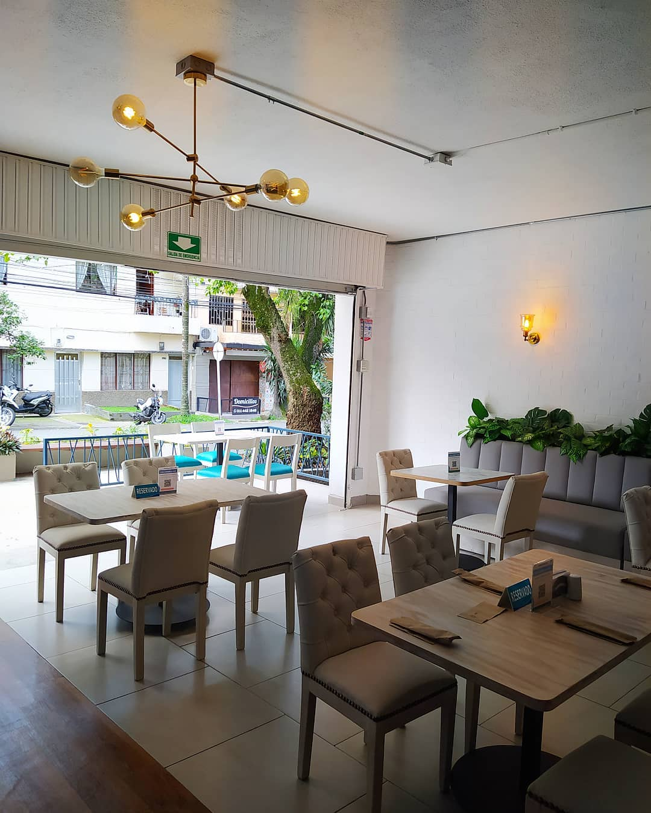

Si prefieres la cocina caribeña, merece la pena que conozcas Restaurante Con Sabor a Mar.

De acuerdo con las opiniones de los críticos, aquí sus camareros te sirven un bien trabajado laing, un sabroso pescado frito y un tierno consomé. No puedes dejar de degustar su excelente cordial siempre que visites este lugar. Visita este establecimiento y prueba un estupendo café cortado.
Muchos visitantes señalan que el personal es cordial en este lugar. Descansar y comer aquí es siempre un placer, principalmente por su sofisticado servicio.
Basándonos en las opiniones de los clientes, los precios son asequibles. Hay una moderna atmósfera en este restaurante, tal y como dicen sus asiduos. Los usuarios de Google son muy generosos con Restaurante Con Sabor a Mar: le han dado 4,5 estrellas.